ASOBI 株式会社
お客様も大好評！
大阪・京都・奈良
社員が考えたおすすめ観光コース
👇 各画像をクリックして詳細ルートをチェック！
大阪

英語堪能な中山さん
京都
韓国語堪能な金さん

奈良
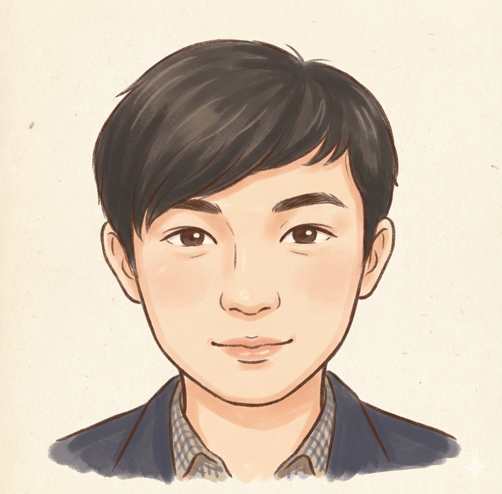
中国生まれ日本育ちの王さん
one day in
大阪
9:00 お迎え
（ホテル・指定された場所）
（ホテル・指定された場所）
9:30 - 11:30 大阪城公園
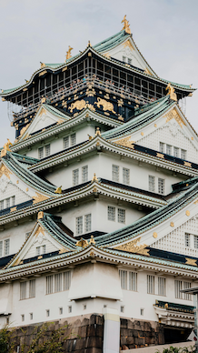
絢爛豪華！秀吉の黄金の世界。
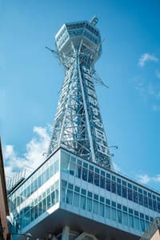
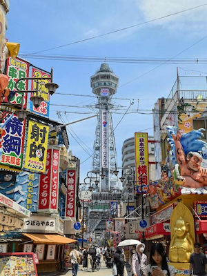
賑やかな浪速のシンボル！
11:30 - 14:30 通天閣＆新世界
14:30 ～ 15:00 四天王寺
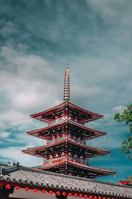
日本仏法最初の官寺
 カフェ併設、ゆっくり休憩。
カフェ併設、ゆっくり休憩。
15:30 - 17:30 海遊館
18:00 - 19:00 道頓堀＆心斎橋
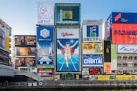
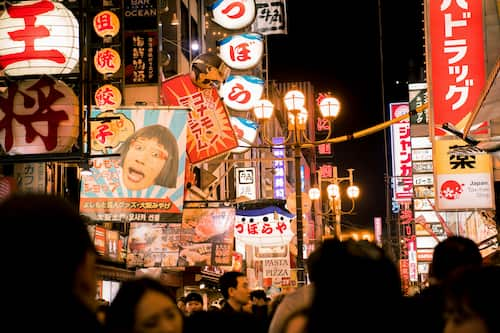
大阪ほんま素敵やわ！
19:00~ ホテルへ送迎
（現地解散して夜景を楽しむこともおすすめ）
大阪へようこそ！
「地元民しか知らない、行列のできない穴場グルメ」をお教えします。
渋滞を避けた最適なルートでご案内します。
「地元民しか知らない、行列のできない穴場グルメ」をお教えします。
渋滞を避けた最適なルートでご案内します。
one day in
京都
9:00～10:30 合流して
京都へ移動
京都へ移動

 着物体験もおすすめ！
着物体験もおすすめ！ハイヤーで移動楽々〜
10:30-12:00 伏見稲荷大社
12:20-15:00 清水寺

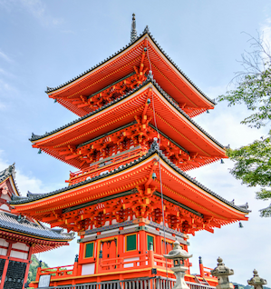
二年坂・産寧坂
可愛いお店たくさん〜
可愛いお店たくさん〜
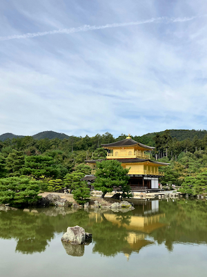
何度見てもこの存在感が
やはりすごい！
やはりすごい！
15:40-16:40 金閣寺
17:20-18:00 祇園＆花見小路

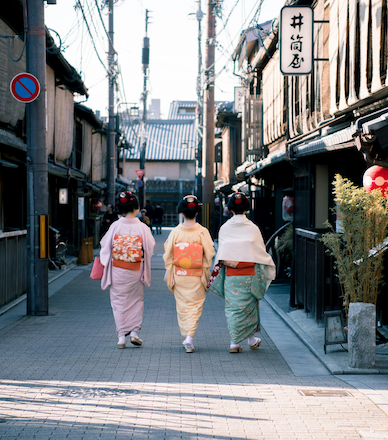
お買い物もグルメも充実！
18:00~ 大阪へ
朝の京都もとてもおすすめです！
混雑をさけて、ゆっくり観光ができます。
ぜひ便利なハイヤーサービスご利用ください！
混雑をさけて、ゆっくり観光ができます。
ぜひ便利なハイヤーサービスご利用ください！
one day in
奈良
9:00 お迎え
（ホテル・指定場所）
（ホテル・指定場所）

 静かな時間が流れる...
静かな時間が流れる...
10:00-11:00 唐招提寺
11:30-15:30
奈良公園＆東大寺
奈良公園＆東大寺
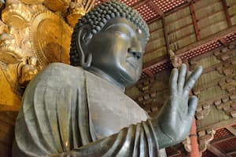
 美味しいお店もたくさん！
美味しいお店もたくさん！
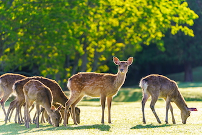
鹿せんべいをあげる時は
気をつけてね！
気をつけてね！
15:40-16:30 春日大社
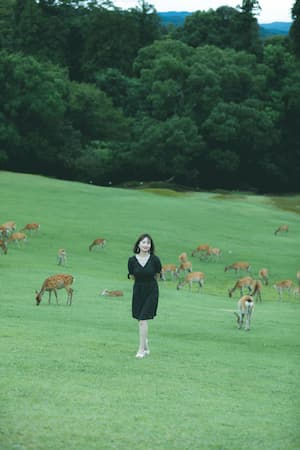
奈良市内を一望できます
17:00-17:40 若草山

Contact Us
お問い合わせはこちらから